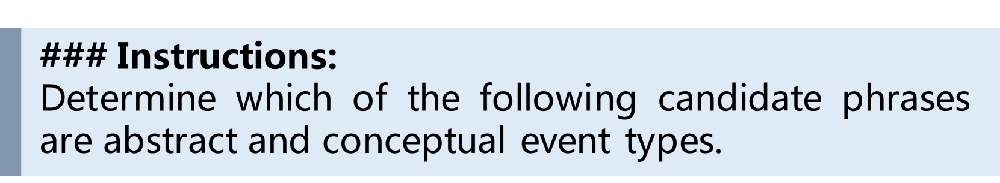

对大型语言模型的事件推理进行全面评估
摘要
事件推理是许多应用程序的基本能力。它需要事件模式知识来进行全局推理，并需要处理事件间关系和推理范式的多样性。LLM在各种关系和推理范式上完成事件推理的能力如何仍然未知。为了减少这种差异，我们全面评估了LLM的事件推理能力。我们引入了一个新的评估标准用于事件推理的评估。 包括模式和实例的两个层面的评估，并且在关系和推理范式上是全面的。我们在上进行了广泛的实验。我们发现LLM有能力完成事件推理，但它们的表现远未令人满意。我们还注意到LLM的事件推理能力存在不平衡。此外，LLM具有事件模式知识，但是它们与人类如何利用这些知识并不一致。基于这些发现，我们引入了两种方法来指导LLM利用事件模式知识。这两种方法都取得了改进。代码和数据集可在https://github.com/TZWwww/EV2上找到。
大型语言模型事件推理的全面评估
陶正伟12 金智12††致谢： *通讯作者。 张一凡12 陈显才12 白晓英3∗ 方悦12 赵海燕12 李佳12 陶崇洋4 1北京大学高可信软件技术重点实验室（教育部） 2北京大学计算机学院 3大数据高等研究院 4北京航空航天大学 {tttzw, xiancaich, yifanzhang, y.fang}@stu.pku.edu.cn, baixy@aibd.ac.cn {zhijin,zhhy.sei, lijiaa}@pku.edu.cn chongyang@buaa.edu.cn
1 介绍
事件是构成基本语义建构单元的实例或发生，包括活动、成就和状态的意义 Vendler (1957)。事件推理是处理和分析事件及其复杂相互关系的能力。与其他能力相比，事件推理在某些方面是独特的。首先，它需要以事件模式的形式的知识，捕捉情景中事件演化的进展，然后进行全局推理 Li et al. (2021a); Mao et al. (2021)。如图 1所示，每个事件实例都与一个事件类型相关联。所有事件类型及其关系形成事件模式知识，反映了事件演化的逻辑和机制。知道“记忆”经常发生在“学习”之后可以帮助回答推理问题。其次，事件间关系和推理范式是多样的。事件推理包括根据某种关系推理事件 Du et al. (2022); Sap et al. (2019b) 和推理事件间关系 Ning et al. (2018); Caselli and Vossen (2017)。查询的关系多种多样，如因果关系 Roemmele et al. (2011)、时间关系 Zhou et al. (2019) 和层次关系 Glavaš et al. (2014)。有各种各样的范式，如推理事件或推理事件间关系。
作为LLM中的基本能力，事件推理支持多种自然语言处理（NLP）任务，包括推荐引擎Yang et al. (2020)、交互式问答系统Souza Costa et al. (2020)和AI代理Liu et al. (2023)。因此，提高事件推理能力对LLM的进步至关重要。
LLM系列如LLAMA Touvron et al. (2023) 系列和GPT系列 Brown et al. (2020) 在各种自然语言推理 Bang et al. (2023); Xu et al. (2023b) 方面已经取得了非凡的成就。 现有研究已经评估了LLM的广泛推理能力，如常识 Bian et al. (2023)、句子关系 Chan et al. (2023) 和数学 Arora et al. (2023)。 然而，对LLM事件推理的全面评估的研究很少。目前的研究只关注实例级事件，导致了LLM如何理解和利用事件模式知识的不清楚。此外，他们忽略了关系和范式的多样性。这些差异取决于LLM这些关键能力的发展。
在这篇论文中，我们全面评估了知识和能力中的事件推理。由于已经存在全面涉及关系和范式，并且可以涵盖模式和实例两个层面的数据集，我们引入了一个新的基准用于评估EVent reasoning。 特色在于评估对齐的模式级别和实例级别。模式级别的评估调查了LLMs的事件模式知识，而实例级别则证明了事件推理能力。此外，为了评估不同类型关系和推理范式中的事件推理，包括两个事件推理任务，即上下文事件分类（CEC）和上下文关系推理（CRR），如图1所示。 是由GPT生成和人类注释构建的。利用，我们全面评估了LLMs在能力和知识方面的事件推理能力。具体来说，我们主要探讨四个研究问题： 1）LLMs在事件推理方面有多熟练的能力？ 2）LLMs在事件模式知识方面有到什么程度的掌握？ 3）LLMs在利用事件模式知识方面是否与人类保持一致？ 4）LLMs在利用事件模式知识的明确指导下能否更好地进行事件推理？
我们进行了广泛的实验来回答这些问题。结果揭示了事件推理的见解： 1）LLMs具有事件推理的能力，但远非令人满意，并且在不同关系和推理范式中存在不平衡。 2）LLMs具有事件模式知识。他们可以像对待实例级问题一样准确地回答模式级问题。但是，模式级能力的发展落后于实例级。 3）LLMs在利用事件模式知识方面与人类不一致。 4）基于这些发现，我们设计了两种指导方法来引导LLMs利用事件模式知识。一种是直接向提示中添加事件模式知识。第二种是以一种联想的方式进行引导。通过设计的利用事件模式知识的指导，LLMs可以进行更好的事件推理。特别是通过直接指导，LLMs获得了显著的改进。
我们总结我们的贡献如下：
-
我们评估模式和实例的事件推理，以及各种关系和范例。
-
我们构建了一个新颖的基准，它具有两个评估级别和全面的关系和推理范例。我们进行了大量实验来探究LLMs如何执行事件推理。
-
根据我们的发现，我们总结了几个见解。基于这些发现，我们设计了指导方法，以指导LLMs利用事件模式知识，从而在事件推理方面取得了改进。
2 问题形式化
事件推理是为了预测某些关系的发生或推断相互关联的相关性 Tao et al. (2023a)。 这些关系包括因果关系 Du et al. (2022)、时间性 Zhou et al. (2019)和层次关系 Glavaš et al. (2014)。
事件推理需要理解事件模式知识。场景的事件模式是一个模式级别图111上标表示模式级别。，其中是事件类型的集合，是事件之间关系的集合。在中的每条边是一个关系三元组，表示之间存在关系和。 通过实例化，我们得到实例级别的事件图222上标表示实例级别。。一个实例事件具有一个事件类型，但具有详细的事件参数和上下文Mitchell (2005)。这两个图的节点和边是相应的，即中的每个三元组都与中具有相同的相互关系的三元组对应。在两个级别上，我们考虑了完全六种关系类型，即{Causes, IsResult, Before, After, IsSubevent, HasSubevent}。
由两种事件推理范式组成，分别是模式和实例的上下文事件分类（CEC）和上下文化关系推理（CRR）。
CEC
给定图，无论是模式级还是实例级，查询的事件和目标关系，CEC要求模型回答一个事件：
| (1) |
是模型，是候选事件集。CEC评估模型对事件语义和结构的理解。
CRR
给定图，无论是模式级还是实例级，两个查询事件，CRR需要确定它们之间的关系：
| (2) |
CRR评估了事件关系的理解。
在模式和实例级别上，具有CEC和CRR任务。模式级任务要求模型具有丰富的知识，而实例级任务需要模型处理详细信息。
3 基准构建
要创建基准，我们通过一个三阶段过程策划了一个全面的数据集。首先，建立模式图。然后，使用GPT4生成实例图。最后，人类标注者负责从和创建问题。
3.1 模式图构建
我们利用EECKG Wang et al. (2022b)来确保我们的模式中包含多种事件类型。EECKG将基于规则的推理与众包洞察相结合，构建在ConceptNet的结构之上。EECKG中的节点表示动词短语作为事件，边表示事件间的关系，重点关注Causes333方向是头事件引起尾事件。其他关系相同。，Before和HasSubevent。
我们的目标要求内的节点应该代表事件类型。因此，我们过滤EECKG节点，去除具体的事件实例。我们更倾向于最多两个词的节点，因为较长的描述往往包含具体细节。对于少于两个词的事件，我们使用GPT4来增强我们的选择，确保我们的模式图具有适当的抽象级别，使用以下提示：

我们确定了一些剩余事件的子集，这些事件太普遍了。为了精细化事件选择，我们还从我们的子集中排除了最常见的事件，以避免通用事件。
我们然后将相互连接的EECKG分解成单独的组件，每个组件代表一个不同的情景。为了防止语义漂移，我们仔细控制每个组件的大小。从一个节点开始，我们进行随机游走，直到节点数量超过设定的阈值，从而定义一个组件。对所有节点执行此过程，以收集所有组件，详细信息请参见算法1。在提取后，我们消除循环，将这些结构转换为DAGs。
EECKG仅包含前向事件演化关系，如Causes。我们进一步包括反向关系的组成部分。我们通过反转边的方向并用它们的相反关系替换关系来为每个组件生成一个反向版本：IsResult、After和IsSubevent。这样就创建了反向组件。
为了为CEC和CRR构建任务做准备，我们为每个组件标记了两个事件。我们对每个组件采样了三对事件，最大路径长度为四，利用它们的前任事件作为背景事件。这些对和背景事件形成了一个模式图。当和之间的路径长度为二时，直接关系作为查询关系；对于更长的路径，我们使用表1推断关系。我们构建了一个模式图，查询的事件对，以及它们的关系。
3.2 实例图构建
我们接下来为每个模式图收集实例图。对于每个节点，我们要求GPT4使用以下提示生成：
我们继承了的关系，并获得了。我们自然地获得了和的实例。
3.3 问题构建
最后一步是在模式和实例级别构建CEC和CRR的问题。对于CEC，关于模式和实例头事件作为查询，尾部作为答案，我们要求GPT4生成15个可能的候选实例事件及其事件类型。
然后我们招募了8名受过良好教育的人类标注员。他们的任务是：
-
1)
修改或丢弃如果无效。确保事件是抽象的，关系正确，中没有情景转移。
-
2)
修订或丢弃，如果不合法。确保事件具体，关系正确，并且整个情景连贯且没有变化。
-
3)
选择三个适当的负面候选事件及其事件类型。确保回答问题依赖于上下文事件。
我们使用注释的模式部分作为模式级问题，实例部分作为实例级问题。然后我们完成CEC。
对于CRR，我们将和视为查询事件，并使用它们之间的关系作为答案来形成基于模式的问题。对于实例部分，我们采用类似的方法。
我们的CEC任务是一个4选1的多项选择任务。CRR是一个3选1的多项选择任务。在CRR中，时间、因果和层次关系的选择分别是[Before, After, Vague], [Causes, IsResult, None], 和 [IsSubevent, HasSubevent, None]。我们在图1中展示了这两个任务的示例。我们在图2中报告了每个任务的数量以及的平均节点和边数。
| Rule | Induction |
|---|---|
| (Before)+ | Before |
| (After)+ | After |
| (Before)⋆(Causes)+(Before)⋆ | Before |
| (After)⋆(IsResult)+(After)⋆ | After |
| (Before)⋆(HasSubevent)+( Before)⋆ | Before |
| (Causes)⋆(HasSubevent)+( Causes)⋆ | Causes |
| (After)⋆(IsSubevent)+( After)⋆ | After |
| (IsResult)⋆(IsSubevent)+( IsResult)⋆ | IsResult |
| S-CEC | I-CEC | S-CRR | S-CRR | AVG N | AVG E |
|---|---|---|---|---|---|
| 492 | 558 | 767 | 835 | 3.62 | 2.78 |
3.4 质量检验
我们招募其他人类标注员来检查的质量。我们对所有任务进行了100个数据的抽样。我们要求他们为每个样本给出两个分数：
-
正确：如果正确则评为1，否则评为0。
-
上下文化：如果答案依赖于上下文事件，则评分为1，否则评分为0。
最后，我们得到了91%的“正确”和92%的“情境化”。人工检查证明了是合格的。此外，上下文事件也是计数。
3.5 现有数据集比较
我们将我们的基准与现有相关数据集进行比较。我们在表3中显示了详细比较。我们的基准是唯一一个针对各种关系和范式的情境化事件推理的，既在模式级别又在实例级别。
| Dataset | L | C | M-R | M-P |
|---|---|---|---|---|
| ALTLEXHidey (2016) | I | ✗ | ✗ | ✗ |
| ASERZhang et al. (2020) | S | ✗ | ✓ | ✗ |
| ATOMICSap et al. (2019a) | S | ✗ | ✓ | ✗ |
| COPARoemmele et al. (2011) | I | ✗ | ✗ | ✗ |
| CQABondarenko et al. (2022) | I | ✓ | ✓ | ✗ |
| ECAREDu et al. (2022) | I | ✗ | ✗ | ✗ |
| ESLCaselli and Vossen (2017) | I | ✓ | ✗ | ✗ |
| ESTERHan et al. (2021) | I | ✓ | ✓ | ✗ |
| HIEVEGlavaš et al. (2014) | I | ✓ | ✗ | ✗ |
| KAIROSLi et al. (2021a) | S | ✓ | ✗ | ✗ |
| LDC2020E25Li et al. (2021a) | S | ✓ | ✗ | ✗ |
| MATRESNing et al. (2018) | I | ✓ | ✗ | ✗ |
| MAVEN-EREWang et al. (2022a) | I | ✓ | ✓ | ✗ |
| MCNCGranroth-Wilding (2016) | I | ✓ | ✗ | ✗ |
| MCTACOZhou et al. (2019) | I | ✓ | ✗ | ✗ |
| REDO’Gorman et al. (2016) | I | ✓ | ✓ | ✗ |
| SCITELi et al. (2021b) | I | ✓ | ✗ | ✗ |
| SCTMostafazadeh et al. (2016) | I | ✓ | ✗ | ✗ |
| SocialIQASap et al. (2019b) | I | ✓ | ✓ | ✗ |
| TB-DenseCassidy et al. (2014) | I | ✓ | ✗ | ✗ |
| TRACIEZhou et al. (2020) | I | ✓ | ✗ | ✗ |
| S I | ✓ | ✓ | ✓ |
4 实验
4.1 评估的LLMs
我们在事件推理上评估了9个LLM。对于开源模型，我们评估它们的聊天版本。对于闭源模型，我们利用它们的官方API进行性能评估。具体来说，我们在实验中使用gpt-4-0125-preview版本作为GPT4和gpt-3.5-turbo-1106版本作为GPT3.5。对于开源模型，我们包括Qwen1.5-7B Bai et al. (2023)，Mistral-7B Jiang et al. (2023)，Baichuan-2-7B Yang et al. (2023)，Llama2-7B Touvron et al. (2023)，WizardLM-7B Xu et al. (2023a)，Vicuna-7B Chiang et al. (2023)和Alpaca-7B Taori et al. (2023)。为了避免慷慨，我们在本文的其余部分使用模型名称来指代聊天版本。对于所有评估的LLM，我们使用相同的提示。我们在附录的图5-8中展示了提示。
5 结果与发现
5.1 LLM具有多么熟练的事件推理能力？
在这部分中，我们主要探讨现有LLM如何完成实例级别的事件推理能力。
LLMs具有事件推理的能力，但即使最强大的GPT-4也远非令人满意。
我们在实例级别评估CEC和CRR。我们在图2中展示了不同关系的结果。对于CEC，GPT4表现最佳。像Qwen1.5-7B、Mistral-7B和GPT3.5这样的模型位居第二梯队。Qwen1.5-7B和Mistral-7B都优于GPT3.5。Qwen1.5-7B甚至在时间和因果关系方面胜过GPT4。其他模型如WizardLM-7B几乎失败，准确率低于40%。对于CRR，GPT4也胜过所有其他模型。然而，与CEC不同的是，其他模型在CRR的表现没有明显差异。
LLM处理不同关系和推理范例的能力是不平衡的。
比较CEC和CRR，如图2中所示的关系结果和表4中I-CEC和I-CRR的平均性能，LLM对CEC的表现优于CRR。我们计算了表4中四个列出模型的平均分数。我们发现I-CEC远高于I-CRR，分别为58.91和46.18。结果明显表明CRR比CEC更难。现有的预训练和SFT数据集可能存在偏见。
LLMs在前向CEC方面表现优异，而在后向方面则不及。
我们计算前向关系（之后，是结果）和后向关系（之前，导致）的平均分数。结果显示在表4的I-F和I-B列中。我们发现I-F的平均值明显优于I-B。这也表明训练数据集在关系方面不平衡。较少的训练数据用于后向关系，导致这些关系的性能较差。然而，在推断场景中，后向关系很重要。应设计方法来增强这种能力。
CEC在模型开发过程中的改进速度比CRR更快。
我们调查了CEC和CRR的改进趋势。在图3中。当模型具有较差的事件推理能力时，它们的性能处于平衡线附近，在任务上没有显著差异。随着发展，CEC的改进速度远快于像GPT3.5，Mistral-7B和Qwen1.5-7B这样的CRR模型。这项调查呼吁对综合事件推理能力的培训需求。
| Model | S-F | S-B | I-F | I-B | S-CEC | I-CEC | S-CRR | I-CRR |
|---|---|---|---|---|---|---|---|---|
| GPT4 | 54.22 | 55.84 | 65.34 | 61.84 | 55.48 | 63.80 | 52.80 | 61.20 |
| GPT3.5 | 47.88 | 50.94 | 55.68 | 49.12 | 49.79 | 50.18 | 45.37 | 39.52 |
| Qwen | 42.96 | 52.45 | 67.05 | 65.37 | 48.98 | 63.98 | 43.00 | 40.00 |
| Mistral | 44.37 | 52.08 | 67.61 | 53.71 | 48.98 | 57.71 | 46.00 | 44.00 |
| AVG | 47.35 | 52.82 | 63.92 | 57.51 | 50.8 | 58.91 | 46.79 | 46.18 |
5.2 LLM对事件模式知识的程度有多大？
在前一节中，我们承认LLM在一定程度上可以完成事件推理。然而，它们是否具有事件模式知识尚不清楚。在这一部分中，我们主要探讨LLM在多大程度上具有事件模式知识，即模式级别。
LLMs具有事件模式知识。
事件模式知识在实例级别的推理能力上逐渐增加。
我们探究了LLM的发展如何增加事件模式知识。我们在图4中描述了LLM在实例级和模式级的CEC性能比较。当模型最初能够推理事件时，它们也具有事件模式知识。此时，模型在模式级事件推理方面表现可以相对较好，甚至更好。随着发展，模型在实例级推理方面的表现比模式级更好。这表明事件模式知识的积累落后于实例级的推理。这一发现表明增强事件模式知识可能进一步提高这些能力，从而获得更好的通用LLM。
5.3 LLM在利用事件模式知识方面是否与人类对齐
在这一部分中，我们研究LLMs如何利用事件模式知识来完成事件推理。我们首先为模型提供实例级问题，然后要求它们生成所需的事件模式知识来解决任务。然后我们评估生成的事件模式知识的准确性。
由于我们对每个问题都有地面真相事件模式知识，唯一的挑战是引导LLMs以类似的格式生成以计算准确性。我们提示的指令首先要求LLMs生成数据中每个实例事件的事件类型。基于事件类型，它要求LLMs进一步生成问题所需的关系三元组。
然而，我们发现LLMs会生成不同单词的事件类型，但内容是正确的。为了减轻这个问题，我们为每个数据准备了候选事件类型列表，使其成为一个分类设置。为了保持任务的难度，我们首先对数据集中的所有事件类型进行KMeans聚类。我们获得了1000个聚类。对于每个数据，我们总共分配了20个随机候选项，包括正确的候选项。负事件类型是从不同的聚类中选择的。
生成后，我们分别计算事件类型的准确度和关系三元组的F1分数，与人工标记的事件模式进行比较。如果所有头部和尾部事件类型以及相互关系与人工标签对齐，则我们将视为正确的三元组。我们在附录的图9-10中展示了详细的例子。
结果在表5中。我们发现只有GPT4能够生成正确的事件类型，而其他模型都失败了。对于关系三元组的生成，即使是GPT4也不能输出合适的事件模式555GPT4的优越性可能归因于1）它的更好对齐。2）数据集最初是由GPT4生成的。。这明显表明，LLMs在解决事件推理任务时可能没有像人类那样利用事件模式知识。利用这种知识的对齐可能进一步提高性能。
| CEC | CRR | |||
|---|---|---|---|---|
| ET | Rel | ET | Rel | |
| GPT4 | 70.71 | 37.30 | 70.66 | 49.41 |
| GPT3.5 | 13.43 | 15.78 | 18.55 | 21.14 |
| Mistral-7B | 11.15 | 9.00 | 11.88 | 15.15 |
5.4 LLM是否可以在明确利用事件模式知识的指导下进行更好的事件推理？
在前面的部分中，我们发现LLM可能不像人类那样利用事件模式知识。这引发了一个有趣的问题，即如果我们引导它们明确使用这样的知识，LLM的表现如何？在本节中，我们探讨这个问题。
我们设计了两种引导方法：
-
直接：直接将每个实例事件的事件类型添加到提示中。
-
CoT: 以CoT风格指导LLM，1）生成每个实例事件的事件类型。2）对事件类型进行推理。这是一种更实用的方法，因为在真实场景中我们事先不知道事件类型。
| CEC | CRR | |||
|---|---|---|---|---|
| w.o.S | w.t.S | w.o.S | w.t.S | |
| GPT4 | 63.80 | 69.89 (6.09) | 61.2 | 63.11 (1.91) |
| GPT3.5 | 50.18 | 60.92 (10.74) | 39.52 | 45.99 (6.47) |
| Mistral-7B | 57.71 | 63.26 (5.55) | 44.00 | 47.07 (3.07) |
| Llama2-7B | 30.29 | 38.17 (7.88) | 34.00 | 43.35 (9.35) |
| WizardLM | 33.69 | 29.93 (3.76) | 37.00 | 44.91 (7.91) |
| Vicuna-7B | 31.18 | 34.41 (3.23) | 42.00 | 42.40 (0.40) |
我们在表6中展示了直接指导的表现。我们发现融合事件模式知识显著提高了事件推理能力。这显示了通过融合事件模式知识解决事件推理的巨大潜力。
我们在表7中报告了CoT指导的结果。我们只报告了GPT-4的结果，因为我们发现其他模型无法遵循这一指示。我们发现在CEC中，CoT指导可以提高性能。然而，CoT的改进落后于Direct，表明有更好方法的空间。为所有LLMs开发先进的指导仍然是一个具有挑战性的研究问题。我们在附录的图11和12中展示了提示和GPT4生成的示例。
| CEC | w.o.S | w.t.S |
|---|---|---|
| GPT4 | 63.80 | 67.92 (4.12) |
6 相关工作
事件推理
LLMs的评估
评估LLMs的能力是使用和改进它们的基础。 一组研究评估LLMs的通用能力Hendrycks et al. (2020); Zheng et al. (2023); Zhong et al. (2023); Bang et al. (2023)。 此外，现有的作品评估LLMs在特定任务中的表现Bang et al. (2023); Bian et al. (2023); Gao et al. (2023); Wei et al. (2023); Li et al. (2024)。 与事件推理相关，Yuan et al. (2023)评估了解决事件关系提取的能力。Tao et al. (2023a)提出了事件语义处理，包括事件理解、推理和事件语义预测。Chan et al. (2023)调查了句子之间的关系推理。与它们相比，我们是第一个引入了模式和实例级事件推理的评估。此外，我们全面评估了各种关系和推理范式的性能。
7 结论
在本文中，我们评估了LLMs的事件推理。我们引入了一个新的基准，它具有模式和实例两个层次。它评估了事件模式知识和推理能力。此外，可用于全面评估各种关系和推理范式中的事件推理。我们对进行了广泛的实验。我们得到了许多见解，例如：1）LLMs具有事件推理能力，但在不同关系和推理范式中并不令人满意且不平衡。2）LLMs具有事件模式知识。然而，随着LLMs的发展，与事件实例推理能力增长相比，这种知识增长缓慢。3）LLMs与人类不一致，无法充分利用事件模式知识进行事件推理。4）根据研究结果，我们设计了两种方法，即Direct和CoT，来指导LLMs利用事件模式知识。通过我们设计的利用事件模式知识的指导，LLMs可以进行更好的事件推理。
限制
我们指导LLMs以两种方式利用事件模式知识。 直接效果最大。然而，更实际的方式 CoT落后于 直接，表明了更好的指导方法的潜力。我们留待未来的工作。
参考文献
- Arora et al. (2023) Daman Arora, Himanshu Gaurav Singh, et al. 2023. Have llms advanced enough? a challenging problem solving benchmark for large language models. arXiv preprint arXiv:2305.15074.
- Bai et al. (2023) Jinze Bai, Shuai Bai, Yunfei Chu, Zeyu Cui, Kai Dang, Xiaodong Deng, Yang Fan, Wenbin Ge, Yu Han, Fei Huang, Binyuan Hui, Luo Ji, Mei Li, Junyang Lin, Runji Lin, Dayiheng Liu, Gao Liu, Chengqiang Lu, Keming Lu, Jianxin Ma, Rui Men, Xingzhang Ren, Xuancheng Ren, Chuanqi Tan, Sinan Tan, Jianhong Tu, Peng Wang, Shijie Wang, Wei Wang, Shengguang Wu, Benfeng Xu, Jin Xu, An Yang, Hao Yang, Jian Yang, Shusheng Yang, Yang Yao, Bowen Yu, Hongyi Yuan, Zheng Yuan, Jianwei Zhang, Xingxuan Zhang, Yichang Zhang, Zhenru Zhang, Chang Zhou, Jingren Zhou, Xiaohuan Zhou, and Tianhang Zhu. 2023. Qwen technical report. arXiv preprint arXiv:2309.16609.
- Bang et al. (2023) Yejin Bang, Samuel Cahyawijaya, Nayeon Lee, Wenliang Dai, Dan Su, Bryan Wilie, Holy Lovenia, Ziwei Ji, Tiezheng Yu, Willy Chung, et al. 2023. A multitask, multilingual, multimodal evaluation of chatgpt on reasoning, hallucination, and interactivity. arXiv preprint arXiv:2302.04023.
- Bian et al. (2023) Ning Bian, Xianpei Han, Le Sun, Hongyu Lin, Yaojie Lu, and Ben He. 2023. Chatgpt is a knowledgeable but inexperienced solver: An investigation of commonsense problem in large language models. arXiv preprint arXiv:2303.16421.
- Bondarenko et al. (2022) Alexander Bondarenko, Magdalena Wolska, Stefan Heindorf, Lukas Blübaum, Axel-Cyrille Ngonga Ngomo, Benno Stein, Pavel Braslavski, Matthias Hagen, and Martin Potthast. 2022. CausalQA: A benchmark for causal question answering. In Proceedings of the 29th International Conference on Computational Linguistics, pages 3296–3308, Gyeongju, Republic of Korea. International Committee on Computational Linguistics.
- Brown et al. (2020) Tom Brown, Benjamin Mann, Nick Ryder, Melanie Subbiah, Jared D Kaplan, Prafulla Dhariwal, Arvind Neelakantan, Pranav Shyam, Girish Sastry, Amanda Askell, et al. 2020. Language models are few-shot learners. Advances in neural information processing systems, 33:1877–1901.
- Caselli and Vossen (2017) Tommaso Caselli and Piek Vossen. 2017. The event storyline corpus: A new benchmark for causal and temporal relation extraction. In Proceedings of the Events and Stories in the News Workshop, pages 77–86.
- Cassidy et al. (2014) Taylor Cassidy, Bill McDowell, Nathanael Chambers, and Steven Bethard. 2014. An annotation framework for dense event ordering. In Proceedings of the 52nd Annual Meeting of the Association for Computational Linguistics (Volume 2: Short Papers), pages 501–506.
- Chan et al. (2023) Chunkit Chan, Jiayang Cheng, Weiqi Wang, Yuxin Jiang, Tianqing Fang, Xin Liu, and Yangqiu Song. 2023. Chatgpt evaluation on sentence level relations: A focus on temporal, causal, and discourse relations. arXiv preprint arXiv:2304.14827.
- Chiang et al. (2023) Wei-Lin Chiang, Zhuohan Li, Zi Lin, Ying Sheng, Zhanghao Wu, Hao Zhang, Lianmin Zheng, Siyuan Zhuang, Yonghao Zhuang, Joseph E. Gonzalez, Ion Stoica, and Eric P. Xing. 2023. Vicuna: An open-source chatbot impressing gpt-4 with 90%* chatgpt quality.
- Du et al. (2022) Li Du, Xiao Ding, Kai Xiong, Ting Liu, and Bing Qin. 2022. e-care: a new dataset for exploring explainable causal reasoning. arXiv preprint arXiv:2205.05849.
- Gao et al. (2023) Jun Gao, Huan Zhao, Changlong Yu, and Ruifeng Xu. 2023. Exploring the feasibility of chatgpt for event extraction. arXiv preprint arXiv:2303.03836.
- Glavaš et al. (2014) Goran Glavaš, Jan Šnajder, Parisa Kordjamshidi, and Marie-Francine Moens. 2014. Hieve: A corpus for extracting event hierarchies from news stories. In Proceedings of 9th language resources and evaluation conference, pages 3678–3683. ELRA.
- Granroth-Wilding (2016) Mark Granroth-Wilding. 2016. What happens next? event prediction using a compositional neural network model. In AAAI Conference on Artificial Intelligence.
- Guan et al. (2019) Jian Guan, Yansen Wang, and Minlie Huang. 2019. Story ending generation with incremental encoding and commonsense knowledge. In Proceedings of the AAAI Conference on Artificial Intelligence, volume 33, pages 6473–6480.
- Han et al. (2021) Rujun Han, I-Hung Hsu, Jiao Sun, Julia Baylon, Qiang Ning, Dan Roth, and Nanyun Peng. 2021. Ester: A machine reading comprehension dataset for reasoning about event semantic relations. In Proceedings of the 2021 Conference on Empirical Methods in Natural Language Processing, pages 7543–7559.
- Hendrycks et al. (2020) Dan Hendrycks, Collin Burns, Steven Basart, Andy Zou, Mantas Mazeika, Dawn Song, and Jacob Steinhardt. 2020. Measuring massive multitask language understanding. arXiv preprint arXiv:2009.03300.
- Hidey (2016) Christopher Hidey. 2016. Identifying causal relations using parallel Wikipedia articles. In Proceedings of the 54th Annual Meeting of the Association for Computational Linguistics (Volume 1: Long Papers), pages 1424–1433, Berlin, Germany. Association for Computational Linguistics.
- Jiang et al. (2023) Albert Q Jiang, Alexandre Sablayrolles, Arthur Mensch, Chris Bamford, Devendra Singh Chaplot, Diego de las Casas, Florian Bressand, Gianna Lengyel, Guillaume Lample, Lucile Saulnier, et al. 2023. Mistral 7b. arXiv preprint arXiv:2310.06825.
- Li et al. (2021a) Manling Li, Sha Li, Zhenhailong Wang, Lifu Huang, Kyunghyun Cho, Heng Ji, Jiawei Han, and Clare Voss. 2021a. The future is not one-dimensional: Complex event schema induction by graph modeling for event prediction. In Proceedings of the 2021 Conference on Empirical Methods in Natural Language Processing, pages 5203–5215.
- Li et al. (2021b) Zhaoning Li, Qi Li, Xiaotian Zou, and Jiangtao Ren. 2021b. Causality extraction based on self-attentive bilstm-crf with transferred embeddings. Neurocomputing, 423:207–219.
- Li et al. (2024) Zhen Li, Xiaohan Xu, Tao Shen, Can Xu, Jia-Chen Gu, and Chongyang Tao. 2024. Leveraging large language models for nlg evaluation: A survey. arXiv preprint arXiv:2401.07103.
- Liu et al. (2023) Xiao Liu, Hao Yu, Hanchen Zhang, Yifan Xu, Xuanyu Lei, Hanyu Lai, Yu Gu, Hangliang Ding, Kaiwen Men, Kejuan Yang, et al. 2023. Agentbench: Evaluating llms as agents. arXiv preprint arXiv:2308.03688.
- Mao et al. (2021) Qianren Mao, Xi Li, Hao Peng, Jianxin Li, Dongxiao He, Shu Guo, Min He, and Lihong Wang. 2021. Event prediction based on evolutionary event ontology knowledge. Future Generation Computer Systems, 115:76–89.
- Mitchell (2005) Alexis Mitchell. 2005. The automatic content extraction (ace) program-tasks, data, and evaluation.
- Mostafazadeh et al. (2016) Nasrin Mostafazadeh, Nathanael Chambers, Xiaodong He, Devi Parikh, Dhruv Batra, Lucy Vanderwende, Pushmeet Kohli, and James Allen. 2016. A corpus and cloze evaluation for deeper understanding of commonsense stories. In Proceedings of the 2016 Conference of the North American Chapter of the Association for Computational Linguistics: Human Language Technologies, pages 839–849.
- Ning et al. (2018) Qiang Ning, Hao Wu, and Dan Roth. 2018. A multi-axis annotation scheme for event temporal relations. In Proceedings of the 56th Annual Meeting of the Association for Computational Linguistics (Volume 1: Long Papers), pages 1318–1328.
- O’Gorman et al. (2016) Tim O’Gorman, Kristin Wright-Bettner, and Martha Palmer. 2016. Richer event description: Integrating event coreference with temporal, causal and bridging annotation. In Proceedings of the 2nd Workshop on Computing News Storylines (CNS 2016), pages 47–56, Austin, Texas. Association for Computational Linguistics.
- Poria et al. (2021) Soujanya Poria, Navonil Majumder, Devamanyu Hazarika, Deepanway Ghosal, Rishabh Bhardwaj, Samson Yu Bai Jian, Pengfei Hong, Romila Ghosh, Abhinaba Roy, Niyati Chhaya, et al. 2021. Recognizing emotion cause in conversations. Cognitive Computation, 13:1317–1332.
- Qin et al. (2019) Lianhui Qin, Antoine Bosselut, Ari Holtzman, Chandra Bhagavatula, Elizabeth Clark, and Yejin Choi. 2019. Counterfactual story reasoning and generation. arXiv preprint arXiv:1909.04076.
- Qin et al. (2020) Lianhui Qin, Vered Shwartz, Peter West, Chandra Bhagavatula, Jena Hwang, Ronan Le Bras, Antoine Bosselut, and Yejin Choi. 2020. Back to the future: Unsupervised backprop-based decoding for counterfactual and abductive commonsense reasoning. arXiv preprint arXiv:2010.05906.
- Roemmele et al. (2011) Melissa Roemmele, Cosmin Adrian Bejan, and Andrew S Gordon. 2011. Choice of plausible alternatives: An evaluation of commonsense causal reasoning. In 2011 AAAI Spring Symposium Series.
- Sap et al. (2019a) Maarten Sap, Ronan Le Bras, Emily Allaway, Chandra Bhagavatula, Nicholas Lourie, Hannah Rashkin, Brendan Roof, Noah A Smith, and Yejin Choi. 2019a. Atomic: An atlas of machine commonsense for if-then reasoning. In Proceedings of the AAAI conference on artificial intelligence, volume 33, pages 3027–3035.
- Sap et al. (2019b) Maarten Sap, Hannah Rashkin, Derek Chen, Ronan LeBras, and Yejin Choi. 2019b. Socialiqa: Commonsense reasoning about social interactions. arXiv preprint arXiv:1904.09728.
- Souza Costa et al. (2020) Tarcísio Souza Costa, Simon Gottschalk, and Elena Demidova. 2020. Event-qa: A dataset for event-centric question answering over knowledge graphs. In Proceedings of the 29th ACM international conference on information & knowledge management, pages 3157–3164.
- Tao et al. (2023a) Zhengwei Tao, Zhi Jin, Xiaoying Bai, Haiyan Zhao, Yanlin Feng, Jia Li, and Wenpeng Hu. 2023a. Eveval: A comprehensive evaluation of event semantics for large language models. arXiv preprint arXiv:2305.15268.
- Tao et al. (2023b) Zhengwei Tao, Zhi Jin, Haiyan Zhao, Chengfeng Dou, Yongqiang Zhao, Tao Shen, and Chongyang Tao. 2023b. Unievent: Unified generative model with multi-dimensional prefix for zero-shot event-relational reasoning. In Proceedings of the 61st Annual Meeting of the Association for Computational Linguistics (Volume 1: Long Papers), pages 7088–7102.
- Taori et al. (2023) Rohan Taori, Ishaan Gulrajani, Tianyi Zhang, Yann Dubois, Xuechen Li, Carlos Guestrin, Percy Liang, and Tatsunori B. Hashimoto. 2023. Stanford alpaca: An instruction-following llama model. https://github.com/tatsu-lab/stanford_alpaca.
- Touvron et al. (2023) Hugo Touvron, Thibaut Lavril, Gautier Izacard, Xavier Martinet, Marie-Anne Lachaux, Timothée Lacroix, Baptiste Rozière, Naman Goyal, Eric Hambro, Faisal Azhar, et al. 2023. Llama: Open and efficient foundation language models. arXiv preprint arXiv:2302.13971.
- Vendler (1957) Zeno Vendler. 1957. Verbs and times. The philosophical review, pages 143–160.
- Wang et al. (2022a) Xiaozhi Wang, Yulin Chen, Ning Ding, Hao Peng, Zimu Wang, Yankai Lin, Xu Han, Lei Hou, Juanzi Li, Zhiyuan Liu, et al. 2022a. Maven-ere: A unified large-scale dataset for event coreference, temporal, causal, and subevent relation extraction. arXiv preprint arXiv:2211.07342.
- Wang et al. (2022b) Ya Wang, Cungen Cao, Zhiwen Chen, and Shi Wang. 2022b. Ecckg: An eventuality-centric commonsense knowledge graph. In International Conference on Knowledge Science, Engineering and Management, pages 568–584. Springer.
- Wei et al. (2023) Xiang Wei, Xingyu Cui, Ning Cheng, Xiaobin Wang, Xin Zhang, Shen Huang, Pengjun Xie, Jinan Xu, Yufeng Chen, Meishan Zhang, et al. 2023. Zero-shot information extraction via chatting with chatgpt. arXiv preprint arXiv:2302.10205.
- Xu et al. (2023a) Can Xu, Qingfeng Sun, Kai Zheng, Xiubo Geng, Pu Zhao, Jiazhan Feng, Chongyang Tao, and Daxin Jiang. 2023a. Wizardlm: Empowering large language models to follow complex instructions. arXiv preprint arXiv:2304.12244.
- Xu et al. (2023b) Xiaohan Xu, Chongyang Tao, Tao Shen, Can Xu, Hongbo Xu, Guodong Long, and Jian-guang Lou. 2023b. Re-reading improves reasoning in language models. arXiv preprint arXiv:2309.06275.
- Yang et al. (2023) Aiyuan Yang, Bin Xiao, Bingning Wang, Borong Zhang, Ce Bian, Chao Yin, Chenxu Lv, Da Pan, Dian Wang, Dong Yan, et al. 2023. Baichuan 2: Open large-scale language models. arXiv preprint arXiv:2309.10305.
- Yang et al. (2020) Chengbiao Yang, Weizhuo Li, Xiaoping Zhang, Runshun Zhang, and Guilin Qi. 2020. A temporal semantic search system for traditional chinese medicine based on temporal knowledge graphs. In Semantic Technology: 9th Joint International Conference, JIST 2019, Hangzhou, China, November 25–27, 2019, Revised Selected Papers 9, pages 13–20. Springer.
- Yang et al. (2022) Linyi Yang, Zhen Wang, Yuxiang Wu, Jie Yang, and Yue Zhang. 2022. Towards fine-grained causal reasoning and qa. arXiv preprint arXiv:2204.07408.
- Yuan et al. (2023) Chenhan Yuan, Qianqian Xie, and Sophia Ananiadou. 2023. Zero-shot temporal relation extraction with chatgpt. arXiv preprint arXiv:2304.05454.
- Zhang et al. (2020) Hongming Zhang, Xin Liu, Haojie Pan, Yangqiu Song, and Cane Wing-Ki Leung. 2020. Aser: A large-scale eventuality knowledge graph. In Proceedings of the web conference 2020, pages 201–211.
- Zhao (2021) Liang Zhao. 2021. Event prediction in the big data era: A systematic survey. ACM Computing Surveys (CSUR), 54(5):1–37.
- Zheng et al. (2023) Lianmin Zheng, Wei-Lin Chiang, Ying Sheng, Siyuan Zhuang, Zhanghao Wu, Yonghao Zhuang, Zi Lin, Zhuohan Li, Dacheng Li, Eric Xing, et al. 2023. Judging llm-as-a-judge with mt-bench and chatbot arena. arXiv preprint arXiv:2306.05685.
- Zhong et al. (2023) Wanjun Zhong, Ruixiang Cui, Yiduo Guo, Yaobo Liang, Shuai Lu, Yanlin Wang, Amin Saied, Weizhu Chen, and Nan Duan. 2023. Agieval: A human-centric benchmark for evaluating foundation models. arXiv preprint arXiv:2304.06364.
- Zhou et al. (2019) Ben Zhou, Daniel Khashabi, Qiang Ning, and Dan Roth. 2019. " going on a vacation" takes longer than" going for a walk": A study of temporal commonsense understanding. arXiv preprint arXiv:1909.03065.
- Zhou et al. (2020) Ben Zhou, Kyle Richardson, Qiang Ning, Tushar Khot, Ashish Sabharwal, and Dan Roth. 2020. Temporal reasoning on implicit events from distant supervision. arXiv preprint arXiv:2010.12753.